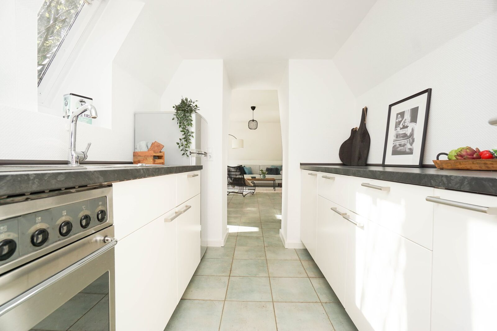
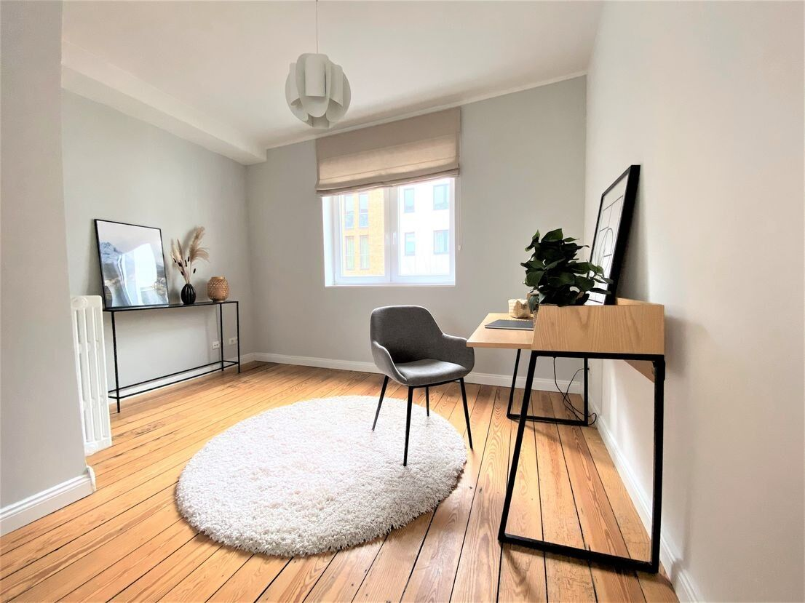
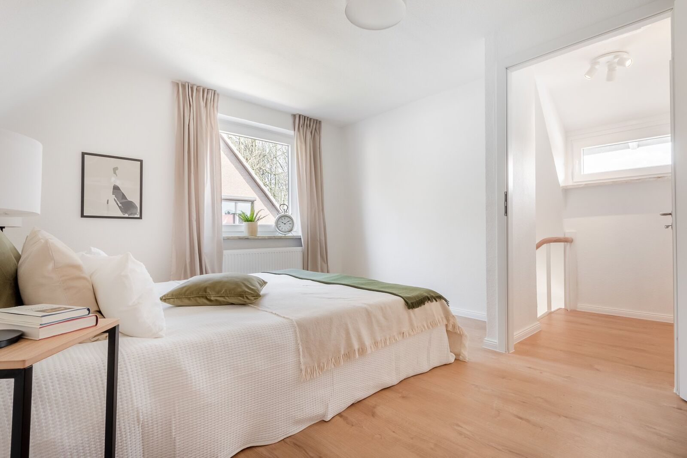
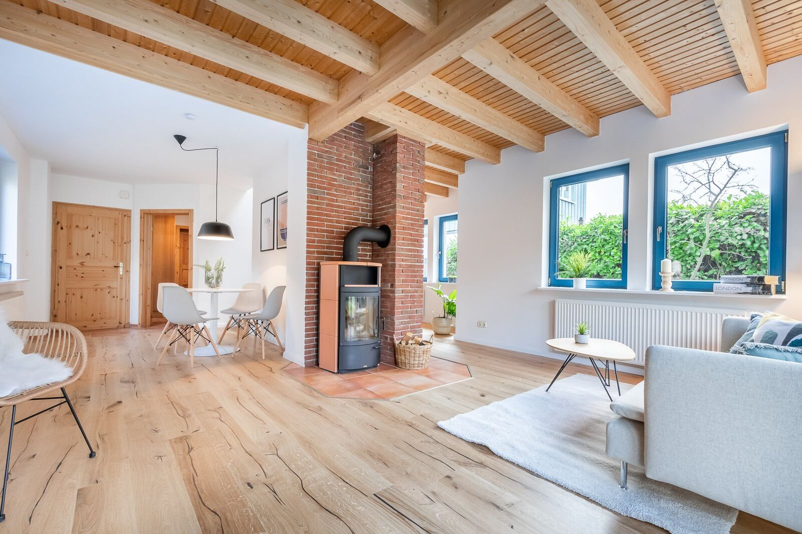

Leitfaden
Die Reichensteuer steigt. Ihr Spielraum auch.
02 Ausgangslage
Ab 2027 zahlt mehr, wer viel verdient
Ab dem 1. Januar 2027 soll die Reichensteuer früher greifen und eine zweite Stufe bekommen. Laut Regierungsentwurf gilt der Steuersatz von 45 Prozent dann schon ab 250.000 Euro zu versteuerndem Einkommen. Ab 280.000 Euro steigt er auf 47 Prozent. Zusammen mit dem Solidaritätszuschlag liegt die Belastung auf jeden zusätzlichen Euro damit bei fast 50 Prozent.
Für Unternehmer, Freiberufler und Spitzenverdiener heißt das: Jeder Euro, der das zu versteuernde Einkommen senkt, ist ab dem kommenden Jahr deutlich mehr wert als bei einem durchschnittlichen Einkommen. Der Gesetzgeber selbst bietet dafür Wege an. Einer der bewährtesten ist die vermietete Immobilie.
Auf den folgenden Seiten zeigen wir am Beispiel von Daniel Schritt für Schritt, wie das konkret aussieht, vom Kauf über die Abschreibung bis zum steuerfreien Verkauf nach zehn Jahren.
| bisher | 45 % ab 277.826 € |
| ab 2027 | 45 % ab 250.000 € |
| 47 % ab 280.000 € |
Zu versteuerndes Jahreseinkommen, zuzüglich Soli. Quelle: Regierungsentwurf Einkommensteuerreformgesetz 2027.

03 Fallstudie · Die Ausgangslage
Wie Daniel mit drei Wohnungen rund 18.000 Euro Steuern im Jahr spart
Daniel K., 52, führt seit 15 Jahren ein Ingenieurbüro in Hamburg. Sein zu versteuerndes Einkommen liegt seit Jahren bei rund 320.000 Euro. Damit fällt er ab 2027 voll unter die neue zweite Stufe der Reichensteuer. Jeder Euro über 280.000 Euro wird mit 47 Prozent belastet, mit Solidaritätszuschlag mit 49,6 Prozent.
Anfang September 2026 hat er sich damit beschäftigt, wie er das Geld lieber in eigenes Vermögen lenkt. Aktien hatte er bereits. Was fehlte, war ein Sachwert, der ohne eigenen Aufwand läuft. Noch im September hat er gekauft.
„Ich wollte nicht nur zahlen, sondern etwas aufbauen. Und ich wollte keine Wohnung, um die ich mich selbst kümmern muss.“
| Person | Daniel K., 52, verheiratet, zwei Kinder |
| Beruf | Inhaber eines Ingenieurbüros, Hamburg |
| Einkommen | rund 320.000 Euro zu versteuern |
| Steuersatz 2027 | 47 % zuzüglich Soli, zusammen 49,6 % |
| Ziel | Steuerlast senken und Vermögen aufbauen, ohne eigenen Verwaltungsaufwand |

04 Fallstudie · Der Kauf
Drei vermietete Wohnungen in Hamburg
Im September 2026 hat Daniel über die Gerlach Immobilien Gruppe drei vermietete Eigentumswohnungen in einem Hamburger Mehrfamilienhaus gekauft, je rund 62 Quadratmeter, zusammen 186 Quadratmeter. Besitz, Nutzen und Lasten sind zum 1. Oktober 2026 übergegangen. Ab diesem Tag laufen Miete, Zinsen und Abschreibung.
Den Kaufpreis von 870.000 Euro hat Daniel vollständig über die Bank finanziert, mit 5 Prozent Zins und 1 Prozent anfänglicher Tilgung. Aus eigenen Mitteln hat er nur die Kaufnebenkosten bezahlt, also Grunderwerbsteuer, Notar und Grundbuch.
Im Kaufvertrag wurde der Kaufpreis auf Gebäude und Grund und Boden aufgeteilt. Das ist wichtig, denn nur der Gebäudeanteil wird abgeschrieben. Bei Daniel entfallen 75 Prozent auf das Gebäude.
Für alle drei Wohnungen gelten die Zusagen der Gruppe. Die Mietgarantie schreibt zehn Jahre lang 15 Euro pro Quadratmeter fest, auch wenn der heutige Mieter weniger zahlt oder auszieht. Wird eine Wohnung frei, renoviert die Gruppe auf eigene Kosten nach vereinbartem Standard und vermietet neu. Die Sondereigentumsverwaltung übernimmt die Gruppe zehn Jahre lang, die Kosten sind enthalten.

| Position | Euro |
|---|---|
| Kaufpreis, 3 Wohnungen, 186 m² | 870.000 |
| Grunderwerbsteuer Hamburg, 5,5 % | 47.850 |
| Notar und Grundbuch, rund 2 % | 17.400 |
| Anschaffungskosten gesamt | 935.250 |
| davon Gebäude, 75 % | 701.438 |
| davon Grund und Boden, 25 % | 233.813 |
| Darlehen, 5 % Zins, 1 % Tilgung | 870.000 |
| Bankrate im Monat | 4.350 |
| Garantierte Miete im Monat | 2.790 |
| Eigenkapital Daniel | 65.250 |
05 Fallstudie · Der Hebel
3,55 Prozent Abschreibung statt 2 Prozent
Die Abschreibung ist der wichtigste Baustein in Daniels Rechnung. Ein Gebäude verliert mit der Zeit an Wert. Diesen Wertverlust darf Daniel jedes Jahr als Kosten ansetzen, obwohl dafür kein Geld abfließt.
Üblich sind bei Häusern ab Baujahr 1925 pauschal 2 Prozent im Jahr, das entspricht 50 Jahren Nutzungsdauer. Das Gesetz erlaubt aber, eine kürzere tatsächliche Restnutzungsdauer nachzuweisen (§ 7 Abs. 4 Satz 2 EStG). Für Daniels Haus hat ein Sachverständiger eine Restnutzungsdauer von rund 28 Jahren ermittelt. Daraus ergibt sich ein Abschreibungssatz von 3,55 Prozent.
Auf den Gebäudeanteil von 701.438 Euro sind das 24.901 Euro im Jahr statt 14.029 Euro. Bei Daniels Steuersatz bringt allein die Abschreibung jedes Jahr 12.347 Euro weniger Steuern.
| Euro | 2 % pauschal | 3,55 % Gutachten |
|---|---|---|
| Abschreibung pro Jahr | 14.029 | 24.901 |
| Steuerwirkung pro Jahr | 6.956 | 12.347 |
| Abschreibung in 10 Jahren | 140.288 | 249.010 |
| Steuerwirkung in 10 Jahren | 69.488 | 123.340 |
Steuerwirkung bei 45 % (2026) und 47 % (ab 2027) zuzüglich Soli. 10 Jahre = Oktober 2026 bis September 2036. Gutachterkosten sind absetzbar. Über die Anerkennung entscheidet das Finanzamt.
06 Fallstudie · Das erste volle Jahr
2027: 224 Euro im Monat für 751 Euro Tilgung
Schon die drei Monate Oktober bis Dezember 2026 zählen. Für sie spart Daniel noch zum alten Satz von 45 Prozent 4.405 Euro Steuern.
2027 ist das erste volle Jahr und das erste mit der neuen Reichensteuer. Daniel nimmt 33.480 Euro garantierte Miete ein. Dagegen stehen 43.186 Euro Zinsen, 24.901 Euro Abschreibung und 2.232 Euro nicht umlagefähige Kosten. Steuerlich entsteht ein Verlust von 36.839 Euro, den Daniel mit seinem Einkommen aus dem Ingenieurbüro verrechnet.
Sein zu versteuerndes Einkommen sinkt von 320.000 auf 283.161 Euro. Es bleibt über 280.000 Euro, jeder Euro des Verlusts wirkt also mit dem neuen Höchstsatz. Das sind 18.267 Euro weniger Steuern.
Nach Steuern zahlt Daniel 2.685 Euro im Jahr zu, rund 224 Euro im Monat. Gleichzeitig tilgt er 9.014 Euro seines Darlehens. Er baut also mehr Vermögen auf, als er selbst einzahlt.
Sein Steuerberater hat die Herabsetzung der Einkommensteuer-Vorauszahlungen beantragt. So kommt die Ersparnis im laufenden Jahr an und nicht erst mit dem Steuerbescheid.
| Position | Euro |
|---|---|
| Garantierte Miete | 33.480 |
| Zinsen, 5 % | −43.186 |
| Abschreibung, 3,55 % auf den Gebäudeanteil | −24.901 |
| Nicht umlagefähige Kosten | −2.232 |
| Steuerliches Ergebnis | −36.839 |
| Steuerersparnis, 47 % zuzüglich Soli | 18.267 |
| Position | Euro |
|---|---|
| Garantierte Miete | 33.480 |
| Bankrate, Zins und Tilgung | −52.200 |
| Nicht umlagefähige Kosten | −2.232 |
| Ergebnis vor Steuern | −20.952 |
| Steuerersparnis | 18.267 |
| Eigenanteil im Jahr | −2.685 |
| Eigenanteil im Monat | −224 |
| Davon getilgt im Jahr | 9.014 |
07 Fallstudie · Zehn Jahre
171.344 Euro weniger Steuern in zehn Jahren
Die zehn Jahre laufen vom Übergang im Oktober 2026 bis September 2036. Die Mietgarantie hält die Einnahmen stabil. Weil Daniel jeden Monat tilgt, sinken die Zinsen und damit der steuerliche Verlust. Die Steuerersparnis geht leicht zurück, sein monatlicher Eigenanteil steigt von 224 auf 431 Euro.
| Zeitraum | Zinsen | Tilgung | Abschreibung | Steuerl. Ergebnis | Steuerersparnis | Eigenanteil/Monat |
|---|---|---|---|---|---|---|
| 2026, Okt bis Dez | 10.866 | 2.184 | 6.225 | −9.279 | 4.405 | 278 |
| 2027 | 43.186 | 9.014 | 24.901 | −36.839 | 18.267 | 224 |
| 2028 | 42.725 | 9.475 | 24.901 | −36.378 | 18.038 | 243 |
| 2029 | 42.240 | 9.960 | 24.901 | −35.893 | 17.798 | 263 |
| 2030 | 41.731 | 10.469 | 24.901 | −35.384 | 17.545 | 284 |
| 2031 | 41.195 | 11.005 | 24.901 | −34.848 | 17.279 | 306 |
| 2032 | 40.632 | 11.568 | 24.901 | −34.285 | 17.000 | 329 |
| 2033 | 40.040 | 12.160 | 24.901 | −33.693 | 16.707 | 354 |
| 2034 | 39.418 | 12.782 | 24.901 | −33.071 | 16.398 | 379 |
| 2035 | 38.764 | 13.436 | 24.901 | −32.417 | 16.074 | 407 |
| 2036, Jan bis Sep | 28.624 | 10.526 | 18.676 | −23.864 | 11.833 | 431 |
| Summe | 409.420 | 112.580 | 249.010 | −345.951 | 171.344 | Ø 318 |
Mit pauschal 2 Prozent Abschreibung hätte Daniel in derselben Zeit 117.492 Euro gespart. Das Gutachten zur Restnutzungsdauer bringt ihm also rund 54.000 Euro zusätzlich.
Alle Werte in Euro, gerundet, monatsgenau gerechnet. Steuerersparnis 2026 bei 45 %, ab 2027 bei 47 %, jeweils zuzüglich Soli. Eigenanteil = Miete minus Bankrate und Kosten plus Steuerersparnis.
08 Fallstudie · Nach zehn Jahren
Der Verkauf ist steuerfrei. Die Abschreibung bleibt.
Im September 2036, zehn Jahre nach dem Kaufvertrag, läuft die Spekulationsfrist ab. Ab dann ist ein Verkaufsgewinn aus dem Privatvermögen steuerfrei.
Das hat eine zweite Wirkung, die oft übersehen wird. Die 249.010 Euro Abschreibung haben zehn Jahre lang Daniels Steuerlast gesenkt. Beim Verkauf nach Ablauf der Frist werden sie nicht nachversteuert. Die Ersparnis wird damit endgültig.
Bei angenommenen 2 Prozent Wertsteigerung im Jahr wären die drei Wohnungen dann rund 1,06 Millionen Euro wert. Daniel kann verkaufen. Er kann auch weiter vermieten und noch rund 18 Jahre mit 3,55 Prozent abschreiben.
| Position | Euro |
|---|---|
| Wert der Wohnungen | 1.060.525 |
| Restschuld Darlehen | −757.420 |
| Vermögen in den Wohnungen | 303.105 |
| Eigener Einsatz, Kaufnebenkosten | 65.250 |
| Eigener Einsatz, Zuzahlungen 10 Jahre | 38.176 |
| Eigener Einsatz gesamt | 103.426 |
| Steuerersparnis in 10 Jahren, darin verrechnet | 171.344 |
Wertsteigerung angenommen, nicht garantiert. Steuerersparnis über zehn Jahre, bereits in den Zuzahlungen verrechnet.
09 Fallstudie · Der Weg
So ist Daniel vorgegangen
Vom ersten Gespräch bis zum Übergang der Wohnungen vergingen rund vier Wochen. Den größten Teil der Arbeit hat die Gerlach Immobilien Gruppe übernommen, die steuerliche Seite hat Daniels Steuerberater begleitet.
- Erstes Gespräch mit der Gerlach Immobilien Gruppe. Daniel schildert Einkommen, Ziele und den Aufwand, den er selbst tragen möchte.
- Auswahl von drei Wohnungen. Daniel erhält Mietverträge, Teilungserklärung und Hausgeldabrechnungen zur Prüfung.
- Durchrechnung mit seinem Steuerberater. Finanzierungszusage der Bank.
- Beurkundung beim Notar, mit Aufteilung des Kaufpreises auf Gebäude und Grund und Boden.
- Übergang von Besitz, Nutzen und Lasten. Mietgarantie und Verwaltung beginnen.
- Gutachten zur Restnutzungsdauer durch einen Sachverständigen.
- Antrag auf Herabsetzung der Einkommensteuer-Vorauszahlungen beim Finanzamt.
„Mein Steuerberater hat es durchgerechnet und mir zugeraten. Das Finanzamt beteiligt sich jetzt an meinem Vermögensaufbau.“Daniel K., Hamburg
10 Grundlagen
Warum die vermietete Wohnung steuerlich so stark ist
Wer eine Wohnung vermietet, darf alle Kosten der Vermietung vom Einkommen abziehen: die Zinsen der Finanzierung, die Verwaltung, Reparaturen und die Abschreibung.
Die Abschreibung ist der eigentliche Hebel. Bei den meisten Bestandsimmobilien sind pauschal 2 Prozent im Jahr üblich, bei Häusern vor 1925 sind es 2,5 Prozent. Weist ein Gutachten eine kürzere Restnutzungsdauer nach, ist mehr möglich, wie Daniels Beispiel zeigt.
Entsteht so ein Verlust, wird er mit anderen Einkünften verrechnet, etwa mit dem Gehalt oder dem Unternehmergewinn. Bei 47 Prozent Reichensteuer zuzüglich Solidaritätszuschlag trägt der Staat fast die Hälfte jedes Verlusts.
Nach zehn Jahren Haltedauer ist der Verkauf aus dem Privatvermögen steuerfrei. Genau auf diesen Zeitraum sind Mietgarantie, Sanierungsgarantie und Verwaltungsübernahme der Gerlach Immobilien Gruppe ausgelegt.
Auch in der Familie spielt die Immobilie ihre Stärken aus. Freibeträge für Schenkungen lassen sich alle zehn Jahre neu nutzen, mit vorbehaltenem Nießbrauch bleiben die Mieteinnahmen beim Schenkenden.

11 Nächster Schritt
Gestalten statt abwarten
Die neue Reichensteuer soll zum 1. Januar 2027 kommen. Wer seine Steuerlast für das kommende Jahr beeinflussen will, sollte die Weichen jetzt stellen. Wir rechnen Ihre persönliche Situation gern mit Ihnen durch, gemeinsam mit Ihrem Steuerberater.
Sprechen Sie uns an.
Eine eigene Genossenschaft gründen?
Manche Familien und Unternehmergruppen möchten ihr Immobilienvermögen in einer eigenen Genossenschaft bündeln. Für Gründung, Satzung und Prüfungsverband arbeiten wir mit erfahrenen Partnern zusammen und vermitteln eine Beratung.
Kontakt
Stephan Gerlach Geschäftsführer, Gerlach Immobilien Gruppe Langenhorner Chaussee 155, 22415 Hamburg +49 40 22862372-0 info@gerlachgroup.de Gespräch vereinbarenRechtliche Hinweise
Diese Broschüre ist eine Werbemitteilung und dient ausschließlich der allgemeinen Information. Sie ist keine Steuer-, Rechts- oder Anlageberatung und ersetzt nicht die individuelle Beratung durch einen Steuerberater. Die steuerlichen Angaben beruhen auf dem Regierungsentwurf des Einkommensteuerreformgesetzes 2027, Stand Oktober 2026. Im Gesetzgebungsverfahren sind Änderungen möglich.
Die Fallstudie ist ein Beispiel auf Basis der genannten Annahmen und keine Prognose. Tatsächliche Zinsen, Mieten, Kosten und Wertentwicklung können abweichen. Eine Wertsteigerung ist nicht garantiert. Der Abschreibungssatz von 3,55 % setzt ein Gutachten zur Restnutzungsdauer voraus, über dessen Anerkennung das Finanzamt entscheidet. Ohne Gutachten gilt in der Regel ein Satz von 2 %.
Mietgarantie, Sanierungsgarantie und Verwaltungsübernahme richten sich ausschließlich nach den jeweiligen Verträgen. Die Abbildungen sind beispielhaft und zeigen nicht die Wohnungen der Fallstudie. Name und persönliche Angaben in der Fallstudie wurden geändert. Alle Angaben ohne Gewähr.
Herausgeber: Gerlach Immobilien GmbH, Langenhorner Chaussee 155, 22415 Hamburg, Amtsgericht Hamburg HRB 153880, Geschäftsführer Stephan Hilmar Gerlach.